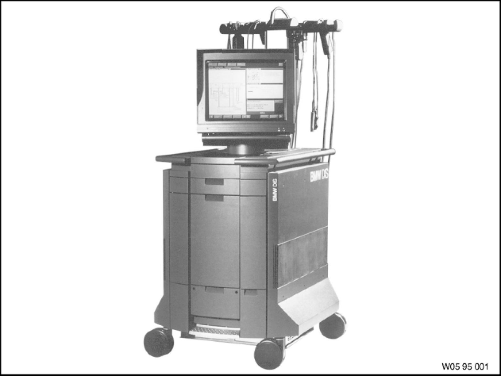

Battery Open-Circuit Current Test
61 20 ... - Battery open-circuit current test
Note:
Observe safety instructions for handling vehicle battery Service Precautions.
Observe Service Information Adapter for open-circuit current measurement.

The open-circuit current test is performed using the Diagnosis and Information System (DIS).